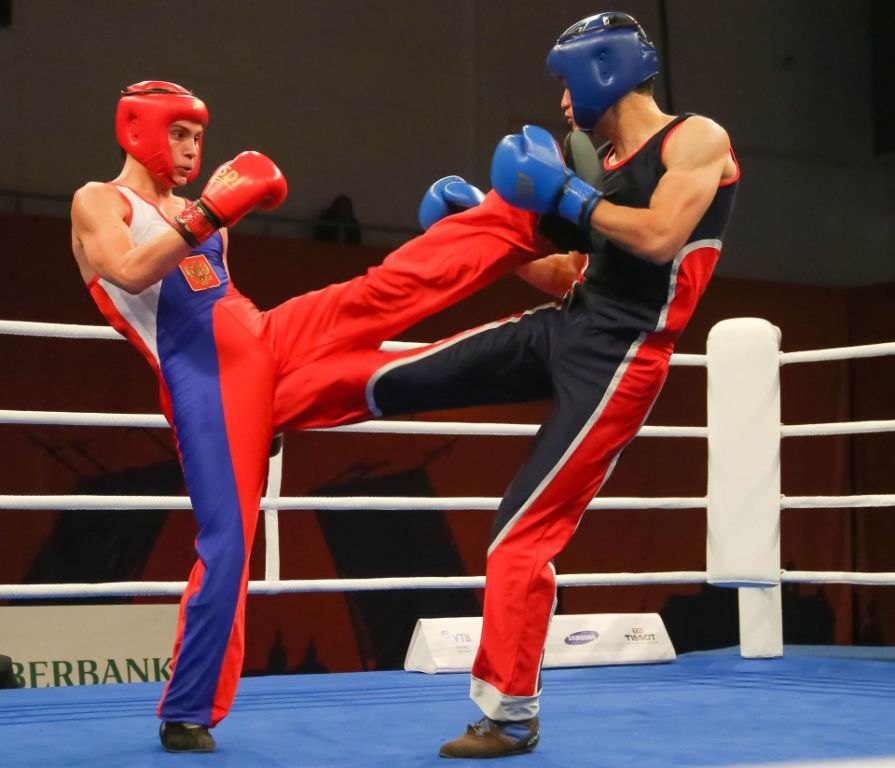

Сават - французское боевое искусство, в котором используются в равной мере и руки, и ноги, комбинируя элементы западного бокса и удары ногами.

История возникновения савата.
Сават как боевое искусство зародился еще в далеком 18 веке. В основе данного боевого искусства лежит древнее уличное французское развлечение, основными приемами которого были удары ногами по голени. Также французский бокс совмещает в себе техники английского бокса и элементы фехтования. Изначально новое боевое искусство сават пользовалось популярностью в Париже и в северных регионах страны, как развлечение на уличных боях. Но 19 век сделал его отдельной боевой дисциплиной и с этого времени начали проводить различные соревнования мирового масштаба. Первое заведение, где обучали технике боя, было открыто в 1825 году аптекарем Мишелем Кассё, последователи которого активно развивали данное направление, добавляя новые техники и правила. Так ученик Кассо – Жозеф Шарлемон в конце 19 века основал Академию французского бокса и разработал энциклопедию по единоборству, в которой указываются все правила и техники.
Техника савата.
Сават как отдельное единоборство формировалось из различных боевых искусств, и сочетает в себе множество боевых техник. В данном боевом искусстве допускаются удары ног и рук. Ножные удары подразделяются на 11 видов, их отличает направление и характерность движения. Рукопашные техники могут быть прямые или непрямые. В качестве приемов защиты бойцы используют блокировки руками.